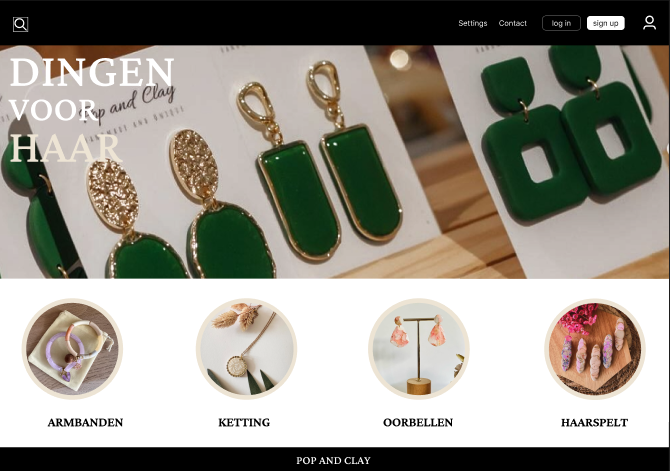

Pop And Clay
WPL2 Case - Tattoo Design & Brand Creation

Over Pop And Clay
Pop And Clay is een uniek kunstproject dat ontstond uit een samenwerking tussen mijn moeder en mij. We begonnen samen met het ontwerpen van een tattoo design, wat uitgroeide tot een volledige creatieve brand. Dit was meer dan een schoolopdracht - het was een echte ondernemeringservaring.
De tattoo, afgebeeld bovenaan, werd gezet door 16-jarige mij met passie en precisie. Het symboliseert kracht, vrijheid en transformatie - waarden die ik hoog in het vaandel draag. Dit project combineert art, business en persoonlijke groei.
Het Tattoo Design
Het tattoo design dat ik en mijn moeder samen creëerden, is meer dan zojaar een mooie afbeelding. Het is een statement - een visuele representatie van onze gezamenlijke visie en creativiteit.
Het ontwerp combineert sterke lijnen met betekenisvolle symboliek. Elke element werd zorgvuldig in overweging genomen. Dit tattoo werd uiteindelijk op huid gezet en is zo een permanente kunstwerk.

Brand Developement
Vanuit het tattoo design groeiden we Pop And Clay uit tot een volledige brand. We begonnen met het creëren van een visuele identiteit die uniek en herkenbaar was. Dit omvatte logo design, kleurenpaletten, en branding richtlijnen.
We zagen Pop And Clay groeien van een persoonlijk project naar iets met potentieel voor een groter publiek. De brand draait om authenticiteit, creativiteit, en het combineren van traditionele en moderne kunstvormen.
Visuele Identiteit
Ik ontwikkelde een volledige visuele identiteit die uniek en professioneel was. Dit omvatte logo, typografie, en kleurenschema.
Marketing Strategy
Ik creëerde een marketing strategie om Pop And Clay onder de aandacht te brengen van het publiek en potentiële klanten.
Mijn Aandeel in het Project

Mijn rol in Pop And Clay was multifacetair. Ik zorgde voor alle visuele designelementen, van het originele tattoo design tot de complete huisstijl. Mijn illustratie en designvaardigheden waren centraal in het project.
Ik was ook verantwoordelijk voor de online aanwezigheid van de brand - website design, social media content, en digitale marketing. Dit gaf me praktische ervaring in branding en digital marketing.
Bovendien hielp ik bij het plannen en organiseren van het project, van concept tot realisatie. Dit leerde me waardevolle lessen in project management en ondernemen.
Wat Ik Eruit Geleerd Heb
Samenwerking
Het werken met mijn moeder leerde me het belang van goede communicatie en gezamenlijke visie. Het was geen standaard werk-relatie, wat betekende dat we extra aandacht aan vertrouwen en begrip moesten besteden.
Iteratie & Feedback
Niet alles werkt perfect de eerste keer. Door regelmatige feedback aan te horen en bereid te zijn aanpassingen te maken, kon ik het eindproduct steeds verbeteren.
Branding & Marketing
Ik leerde hoe je een brand van de grond af opbouwt. Dit omvatte visueel design, maar ook het begrijpen van je doelpubliek en hoe je hen bereikt.
Ondernemen
Dit project gaf me echte ervaring met ondernemerschap - van concept tot realisatie tot marktintroductie. Het was waardevolle praktische kennis.
Projectresultaten & Deliverables
Tattoo Design
Origineel en betekenisvol design
Visuele Identiteit
Logo, kleuren, typografie
Website
Online aanwezigheid
Marketing Materials
Flyers, banners, social media
Brand Strategy
Market positioning
Case Study
Volledige documentatie
Een Speciale Samenwerking
Wat Pop And Clay bijzonder maakt, is dat het een samenwerking is tussen mijn moeder en mij. Dit voegde een persoonlijk element toe aan het project dat niet zomaar voorbijgaat. We deelden niet alleen een werkraum, maar ook een visie en passie voor het project.
Deze samenwerking heeft me laten zien hoe krachtig het kan zijn wanneer twee personen met dezelfde drive en creativiteit samen aan iets werken. Het is meer dan een project - het is een monument van onze connectie en gezamenlijke ambitie.
Reflectie
Pop And Clay vertegenwoordigt meer dan een schoolopdracht. Het is een echte ondernemeringservaring waar ik alle vakgebieden heb kunnen toepassen: design, marketing, project management, en teamwork. Het tattoo design zal voor altijd herinneren aan deze reis.
Dit project toont aan dat wanneer je passie en creativiteit combineren met hardwerk en geduld, je iets bijzonders kunt creëren - iets dat waarde heeft en anderen inspireert.